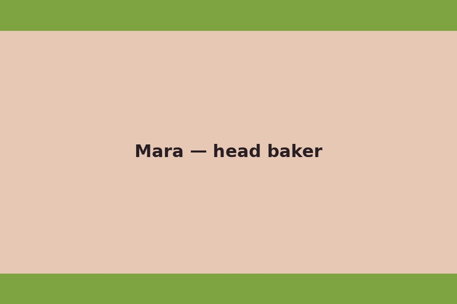

⌛
Kitchen starts at 05:40 AM
Mara Valenti
Head Baker & KitchenRuns the kitchen, bakes from 5:40 every morning. Sourdough pastries, flaky croissants, seasonal tarts, and comforting all-day breakfast plates made fresh daily.
Mara’s morning lineup
Warm Fig Danish
Cardamom Knot
Wild Herb Sourdough